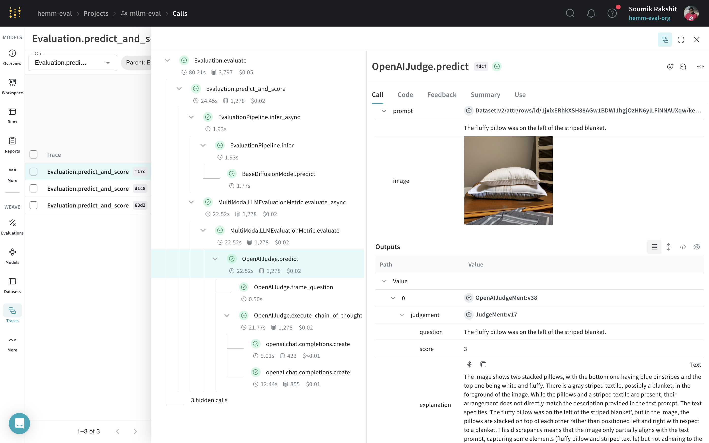

Multi-modal LLM Based Evaluation
This module aims to implement the Multi-modal LLM based metric inspired by
- Section IV.D of the paper T2I-CompBench++: An Enhanced and Comprehensive Benchmark for Compositional Text-to-image Generation and
- Section 4.4 of the paper T2I-CompBench: A Comprehensive Benchmark for Open-world Compositional Text-to-image Generation.
|  |
|---|
| Using Multi-modal LLM based metric for evaluation a diffusion model. The Weave UI gives us a holistic view of the evaluations to drill into individual ouputs and scores. |
{kind=link}
Example
First, download the Spacy English langugage pipeline
Next, you need to set your OpenAI API key: Finallly, you can run the following snippet to evaluate your model:import wandb
import weave
from hemm.eval_pipelines import BaseDiffusionModel, EvaluationPipeline
from hemm.metrics.vqa import MultiModalLLMEvaluationMetric
from hemm.metrics.vqa.judges.mmllm_judges import OpenAIJudge, PromptCategory
wandb.init(project="mllm-eval", job_type="evaluation")
weave.init(project_name="mllm-eval")
dataset = weave.ref(dataset_ref).get()
diffusion_model = BaseDiffusionModel(
diffusion_model_name_or_path="stabilityai/stable-diffusion-2-1",
enable_cpu_offfload=False,
image_height=512,
image_width=512,
)
evaluation_pipeline = EvaluationPipeline(model=diffusion_model)
judge = OpenAIJudge(prompt_property=PromptCategory.complex)
metric = MultiModalLLMEvaluationMetric(judge=judge)
evaluation_pipeline.add_metric(metric)
evaluation_pipeline(dataset=dataset)
Metrics
MultiModalLLMEvaluationMetric
Bases: BaseMetric
Multi-modal LLM-based evaluation metric for an image-generation model.
Parameters:
| Name | Type | Description | Default |
|---|---|---|---|
judge
|
Union[Model, OpenAIJudge]
|
The judge LLM model to evaluate the generated images. |
required |
name
|
Optional[str]
|
Name of the evaluation. |
'mmllm_eval_metric'
|
Source code in hemm/metrics/vqa/multi_modal_llm_eval.py
evaluate(prompt, model_output)
Evaluate the generated image using the judge LLM model.
Parameters:
| Name | Type | Description | Default |
|---|---|---|---|
prompt
|
str
|
The prompt for the model. |
required |
model_output
|
Dict[str, Any]
|
The model output. |
required |
Source code in hemm/metrics/vqa/multi_modal_llm_eval.py
Judges
OpenAIJudge
Bases: Model
OpenAI judge model for evaluating the generated images. The model uses OpenAI's GPT-4 model to evaluate the alignment of the generated images to the respective prompts using a chain-of-thought prompting strategy. The model is inspired by Section IV.D of the paper T2I-CompBench++: An Enhanced and Comprehensive Benchmark for Compositional Text-to-image Generation and Section 4.4 of the paper T2I-CompBench: A Comprehensive Benchmark for Open-world Compositional Text-to-image Generation.
Parameters:
| Name | Type | Description | Default |
|---|---|---|---|
prompt_pipeline
|
str
|
The Spacy pipeline to use for extracting the prompt parts. |
'en_core_web_sm'
|
prompt_property
|
PromptCategory
|
The property of the prompt to evaluate. |
color
|
openai_model
|
str
|
The OpenAI model to use for evaluation. |
'gpt-4o-2024-08-06'
|
max_retries
|
int
|
The maximum number of retries for the OpenAI model. |
5
|
seed
|
int
|
Seed value for the random number generator. |
42
|
system_prompt
|
Optional[str]
|
The system prompt for the OpenAI model |
required |
Source code in hemm/metrics/vqa/judges/mmllm_judges/openai_judge.py
20 21 22 23 24 25 26 27 28 29 30 31 32 33 34 35 36 37 38 39 40 41 42 43 44 45 46 47 48 49 50 51 52 53 54 55 56 57 58 59 60 61 62 63 64 65 66 67 68 69 70 71 72 73 74 75 76 77 78 79 80 81 82 83 84 85 86 87 88 89 90 91 92 93 94 95 96 97 98 99 100 101 102 103 104 105 106 107 108 109 110 111 112 113 114 115 116 117 118 119 120 121 122 123 124 125 126 127 128 129 130 131 132 133 134 135 136 137 138 139 140 141 142 143 144 145 146 147 148 149 150 151 152 153 154 155 156 157 158 159 160 161 162 163 164 165 166 167 168 169 170 171 172 173 174 175 176 177 178 179 180 181 182 183 184 185 186 187 188 189 190 191 192 193 194 195 196 197 198 199 200 201 202 203 204 205 206 207 208 209 210 211 212 213 214 215 216 217 218 219 220 221 222 223 224 225 226 227 228 229 230 231 232 233 234 235 236 237 238 239 240 241 242 243 244 245 246 247 248 249 250 251 252 253 254 255 256 257 258 259 260 261 262 263 264 265 266 267 268 269 270 271 272 273 274 275 276 277 278 279 280 281 282 283 284 285 286 287 288 289 290 291 292 293 294 295 296 297 298 299 300 301 302 303 304 305 306 307 308 309 310 311 312 313 314 315 316 317 318 319 320 321 322 323 324 325 326 327 328 329 330 331 332 333 334 335 336 337 338 339 340 341 342 343 344 345 346 347 348 349 350 351 352 353 354 355 356 357 358 359 360 361 362 | |
extract_prompt_parts(prompt)
Extract the prompt parts from the given prompt.
Parameters:
| Name | Type | Description | Default |
|---|---|---|---|
prompt
|
str
|
The prompt to extract the parts from. |
required |
Returns:
| Type | Description |
|---|---|
List[TaggedPromptParts]
|
List[TaggedPromptParts]: List of tagged prompt objects. |
Source code in hemm/metrics/vqa/judges/mmllm_judges/openai_judge.py
frame_question(prompt, image)
Frame the question corresponding to the given prompt and image for the chain-of-thought system of judgement.
Parameters:
| Name | Type | Description | Default |
|---|---|---|---|
prompt
|
str
|
The prompt to frame the question for. |
required |
image
|
Image
|
The image to frame the question for. |
required |
Returns:
| Type | Description |
|---|---|
List[JudgeQuestion]
|
List[JudgeQuestion]: List of questions to ask for the given prompt. |
Source code in hemm/metrics/vqa/judges/mmllm_judges/openai_judge.py
93 94 95 96 97 98 99 100 101 102 103 104 105 106 107 108 109 110 111 112 113 114 115 116 117 118 119 120 121 122 123 124 125 126 127 128 129 130 131 132 133 134 135 136 137 138 139 140 141 142 143 144 145 146 147 148 149 150 151 152 153 154 155 156 157 158 159 160 161 162 163 164 165 166 167 168 169 170 171 172 173 174 175 176 177 178 179 180 181 182 183 184 185 186 187 188 189 190 191 192 193 194 195 196 197 198 199 200 201 202 203 204 205 206 207 208 209 210 211 212 213 214 215 216 217 218 219 220 221 222 223 224 225 226 227 228 229 230 231 232 233 234 235 236 237 238 239 240 241 242 243 244 245 246 247 248 249 250 251 252 253 254 255 256 257 258 259 260 261 262 263 264 265 266 267 268 269 270 271 272 273 | |
predict(prompt, image)
Predict the score for the given prompt and image.
Parameters:
| Name | Type | Description | Default |
|---|---|---|---|
prompt
|
str
|
The prompt to evaluate. |
required |
image
|
Image
|
The image to evaluate. |
required |